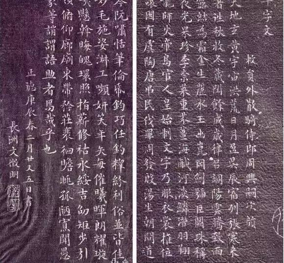

中年文征明书画已经享誉盛名，但依旧屡试不第，54岁的他受工部尚书李充嗣的举荐才得以担任翰林院待诏岁的他受工部尚书李充嗣的举荐才得以担任翰林院待诏岁的他受工部尚书李充嗣的举荐才得以担任翰林院待诏,但屡遭排挤，第二年便请辞官。有了从政经历后，文征明对仕途不抱希望，便更加投情于书画之中，已经有了自己的特色。 嘉靖二年，唐伯虎去世，三年后吴门书坛的领袖人物祝允明也去世了。文征明上书三年之后才得以回乡，这时的文征明来到苏州 ，便是群龙无首的吴门书派中的定海神针，成为新的吴门文坛的盟主，这时的他再也不思为官之事，安心的做一个文艺人，可以游历各地，广收门徒。 此时的文征明小楷已摆脱缺乏个性的“台阁体”，自成家法，又有欧体的劲健。他在《跋李少卿帖》中说: “自学书不讲，流习成弊，聪达者病于新巧，笃古者泥于规模。公既多阅古帖，又深诣三昧，遂自成家，而古法不亡。”此时的他已经找到了自己的影子，自己的艺术风格也逐渐成熟了。
文征明-小楷千字文 刻本（采真馆法帖） （1520年 51岁）